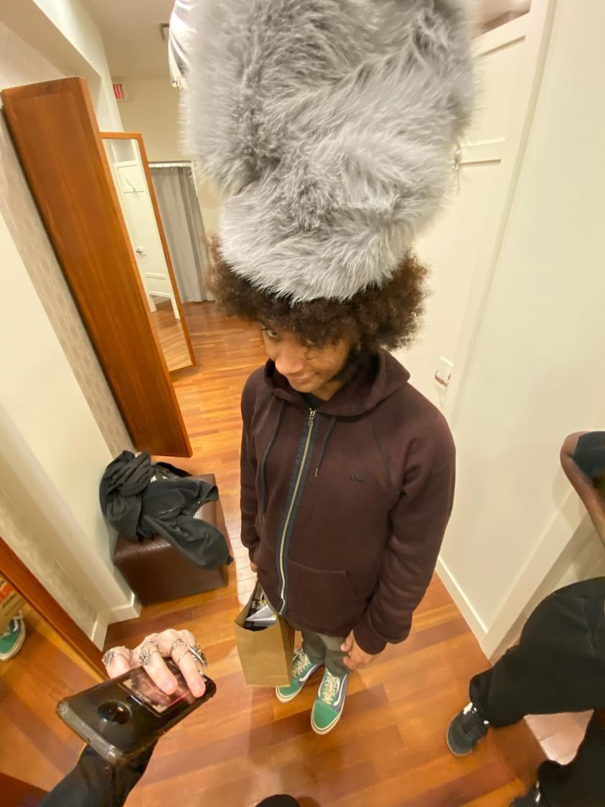

Danté Lavictoire
About Me
I was born in Lanark County, and grew a fondness for nature exploration which has stuck hard for the past four years. Some of my hobbies are reading manga, playing video games and thrifting. Through manga I found my love of Dragon Ball and many other anime which serves as a benchmark for sketching and outputting creative works. A personal not-so-guilty pleasure of mine is Thomas The Tank Engine, my favourite piece of media of all time hands down. It is what indirectly spurred me on the path of Graphic Design as I signed up for Comtech in high school because I wanted to make posters of the show.
Coming to Algonquin meant having to move into the city, which was a nice change as there is no public transit back home. I'm extremely appreciative of all the friends I've made so far here, all with hearts of gold and a staggering amount of creativity. Despite this though, I do prefer the quieter atmosphere of Lanark County. Most of my time in the city is spent on campus either in class or working on assignments which means more often than not I'm busy, a stark contrast to the calmness of home. What I miss most about it is my cat Yamcha, her and everybody else are the reason why I put my 100% into whatever I do.
"In the end, if I don't do it who will?."
Son Goku
My Skills
- Positive work ethic.
- Dedication to quality work.
- Vast experience of working with deadlines.
- Adaptability.
Graphic Design Courses
- Computer Graphics 2
- Web Design 1
- Concept Sketching 2
- Typography 2
- Communications For Graphic Design
- Graphic Design 2
- Understanding Human Sexuality